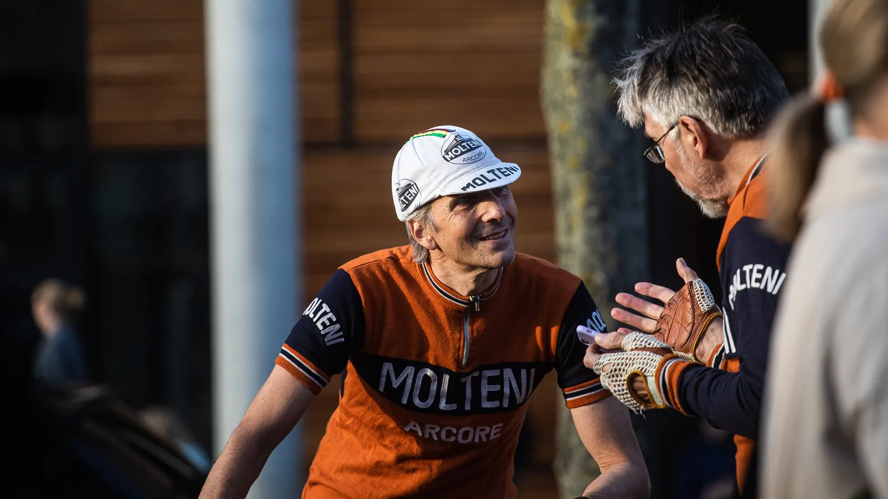

Grand Prix Gruppo Sportivo Velopresse 2021

Hele gaden emmer af væddeløbere fit for fight. Det er efterår – og solen står lavt over Ingerslev Boulevard. Det årlige tilbagevendende Grad Prix Gruppo Sportivo Velopresse er en kærlighedserklæring til cykelsporten. Der er Chefen med cowboyhat og Kaptajnen med smørhår. De er Gruppo Sportivo Velopresse.
Squadra Molteni har sendt Svend seegert, Lars Munch og Kaptajn Bjørnsteen til Grand Prix G.S.V. 2021. De er klar til årets sidste race.

Tåclipsne bliver spændt ekstra hårdt – og de gamle stålcykler bliver tæsket igennem. Synet er sløret og farten er høj i den nedadgående sol.


De 11 omgange á 1100 meter rundt på Ingerslevs Boulevard er et sandt syrebad til lyden af skrigende tilskuere og ringende kirkeklokker.

Kaptajn Bjørnsteen løber med sejren i stålklassen, mens Svend Seegert og Lars Munch tager 2. og 4. pladsen. En lokal CKA Bianchi rytter, godt nok i lycra og klikpedaler, fik klemt sig ind på 3 pladsen.
Forza Gruppo Sportivo Velopresse
Forza Squadra Molteni


Foto: Jan Jul og Uggi Kaldan